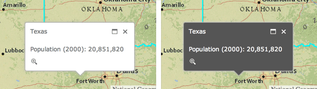
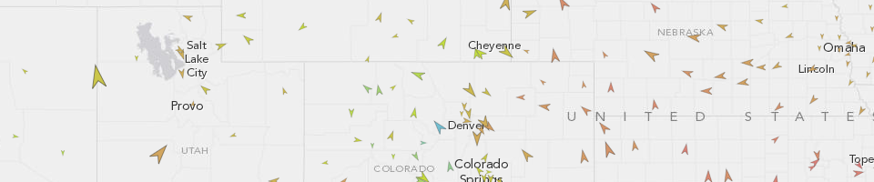
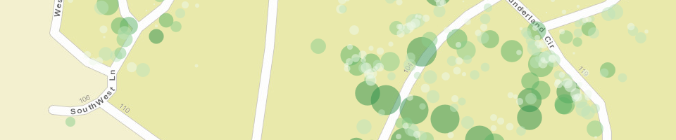
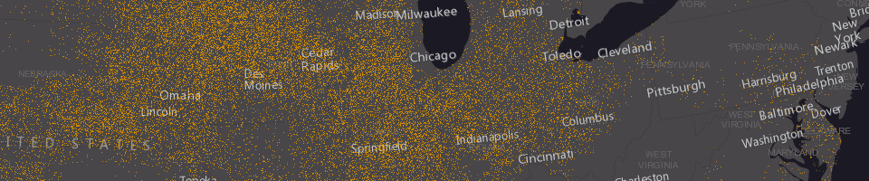
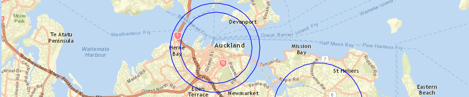
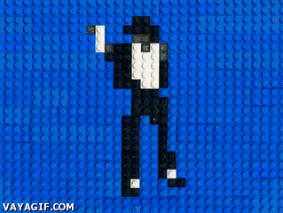
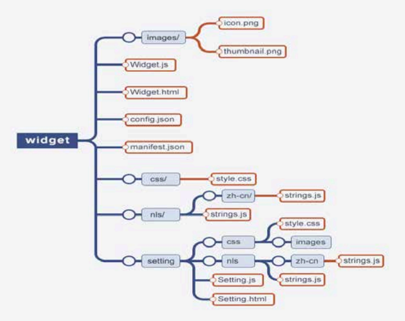

Agenda
- ArcGIS for Developers
- New Stuff
- Web App Builder
- Custom Development
- Anything else?
ArcGIS for Developers
Your Content
- Downloads
- Hosted Data
- Registered Applications
- Usage Summary
OSS
- Replaces old forums
- Has enhanced community features
- Promotes collaboration
Show me some new stuff*

*Actual stuff may not be new to you
1. Popup improvements
Use related fields in a popup template
"fieldName": "Point_Count_COMMON" // not related
"fieldName": "relationships/0/Point_Count_COMMON" // related
Light and Dark popup themes

- .NET, Java, PHP
- Accessing resources secured with token based authentication
- OAuth 2.0 app logins
- Enabling logging
- Both resource and referer based rate limiting
3. Better vector maps
- Rotation
- Symbol scaling
- Dot density renderer
- Scale dependent renderer
3.1. Rotation
Geographic
Arithmetic
layer.renderer.setRotationInfo({
field: 'heading',
type: 'geographic'
});

3.2. Symbol scaling
layer.renderer.setProportionalSymbolInfo({
field: 'GroundArea',
valueUnit: 'meters',
valueRepresentation: 'area'
});
layer.renderer.setProportionalSymbolInfo({
field: 'GroundArea',
minDataValue: 1,
minSize: 4,
maxDataValue: 100,
maxSize: 20
});

3.3. Dot density renderer
var renderer = new DotDensityRenderer({
fields: [{
name: "M163_07",
color: new Color("#CC8800")
}],
dotValue: 1600,
dotSize: 1
});
layer.setRenderer(renderer);

3.4. Scale dependent renderer
var params = {rendererInfos: [{
"renderer": renderer1,
"minScale": 50000000,
"maxScale": 10000000
}, {
"renderer": renderer2,
"minScale": 10000000,
"maxScale": 5000000
}]};
var scaleDependentRenderer = new ScaleDependentRenderer(params);
layer.setRenderer(scaleDependentRenderer);
New repository on GitHub with TypeScript definitions for the JS API as well as the jshint options file used by the JS API team
5. New Layers
6. Integrated OAuth Support
- Use localStorage to store tokens when "Keep me signed in" is checked
- Prompt user to sign in again when token expires
- Advanced configuration options
7. Circles _
var circle = new Circle({
center: point,
radius: 100
});
var graphic = new Graphic(circle, symbol);
map.graphics.add(graphic);

8. New Map Widgets
- Home button
- Locate button
- Swipe tool
9. Go Offline
- Finally!
- Export tiles from tiled service
- Sync framework for feature services
10. Web App Builder
Web App Builder
What is it?
Supported Browsers
- Chrome
- Firefox
- Safari 3+
- Internet Explorer 9+
Installation
- Stupid simple
- Download Unzip run start.bat
- or
- run node server.js in directory from command prompt
Create an App
- Set the map (webmap)
- Set the theme
- Choose your widgets
- Set the app attributes
- Run it!
Webmap 101
- Basemap
- Operational data
- Popups
- and more
- More info
Set your (Web)map
- Author on ArcGIS Online
- or Portal
- Set the start extent
Set your theme
- Determines look and feel
- Layout
- Affects the UX
App Attributes
- Title
- Subtitle
- Logo
- Links
- Use a proxy
Widgets

OOTB
- Some are preconfigured with a layout
- In-panel and off-panel widgets
- ~20 included currently
Off-Panel widgets
- Attribute table
- Coordinate
- Geocoder
- Home Button
- My Location
- Overview Map
- Scalebar
In-Panel widgets
- Basemap Gallery
- Bookmark
- Chart
- Directions
- Draw
- Edit
In-Panel widgets cont.
- Geoprocessing
- Layer List
- Legend
- Measurement
- Print
- Query
Enough config, lets build something
Customization Options
- Edit existing widgets / themes
- Create widgets
- Create themes - styles and layouts
Geocoder
Change the default behaviour
Custom Widgets
- Naming convention
- Required files
- In or Off Panel
- Can be configurable (code and in builder)
- Support multiple cultures
- Support themes
- Communication with app container, map and other widgets
Convention and Defaults

BaseWidget
define(['dojo/_base/declare', 'jimu/BaseWidget'],
function(declare, BaseWidget){
return declare([BaseWidget], {
// do stuff here
});
});
Lets Create a Widget
OpenWeatherMap
Custom Themes
- Panels
- Theme Widgets
- Styles
- Layouts
- Images
- manifest.json
Lets Create a Theme
Deployment
- Download zip from WAB
- Unzip and configure with web server
- APP ID?
Third Party Libraries
Yes you can use them
Lets Deploy!

What about different environments?
Before we move on

COTS vs. Custom
COTS

Custom
Types of Apps
- Map centric
- Maps as app navigation
- Map as context
- Map-less apps
Development Toolbox
- IDE
- Source Control
- Design
- Collaboration
- Knowledge sharing / discovery
- Testing
Remember
- Read code
- Write code
- Delete code
- Repeat
 image from saltoff.co.nz
image from saltoff.co.nz
- Find an Eagle collector
- Ask a question
- Guess the number of #NZEUC tweets
- Follow @eaglegis for updates
- Entries close an hour before closing session